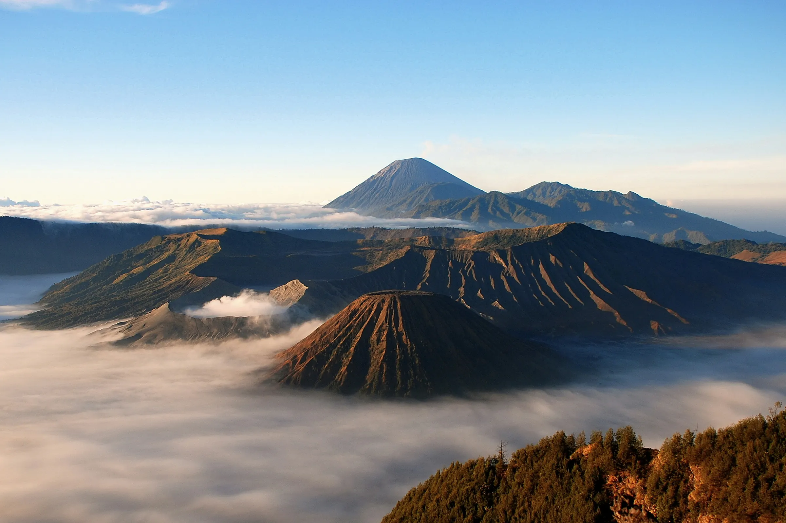
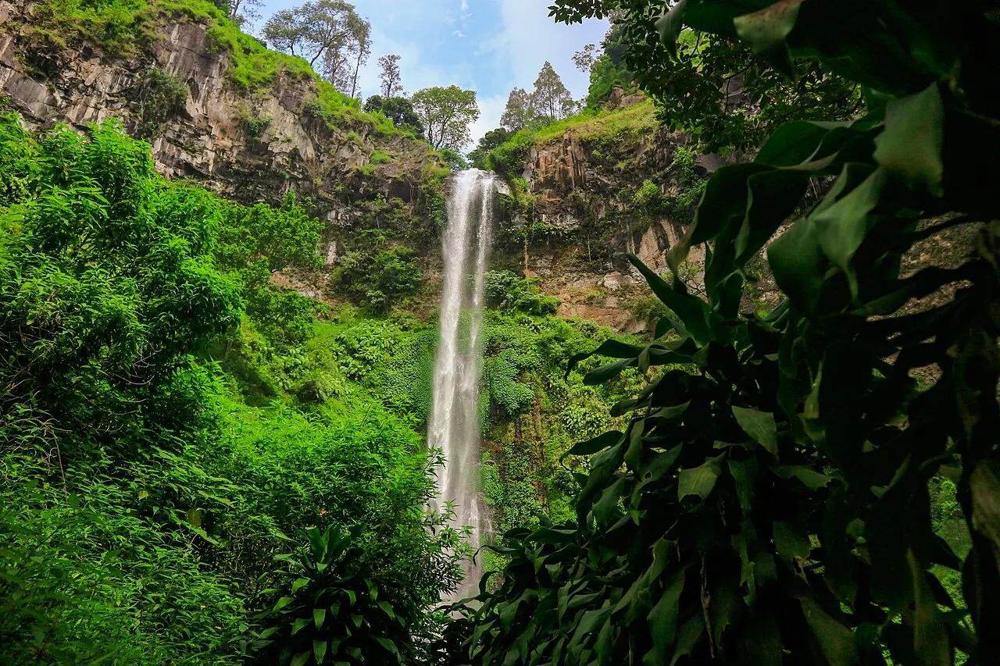
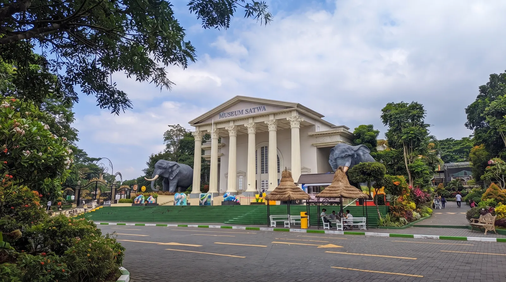
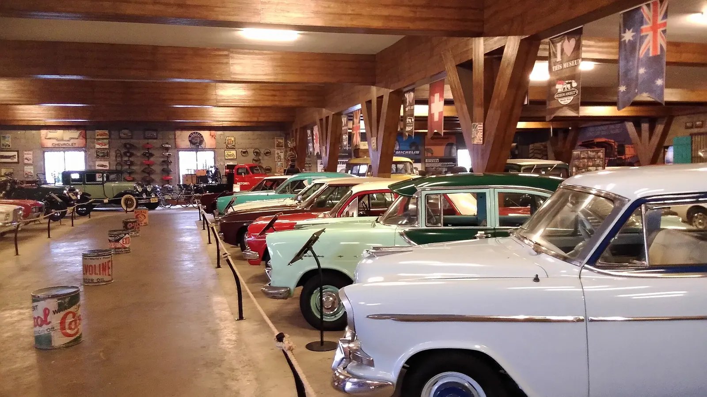
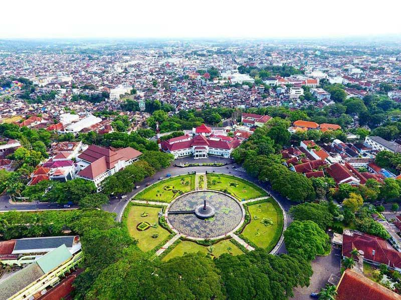

POPULAR
⌖ Jawa Timur
Gunung Bromo
Nikmati keindahan sunrise dan panorama pegunungan yang memukau.
Explore More →Temukan keindahan alam, destinasi tersembunyi, dan pengalaman perjalanan tak terlupakan di Malang.
Temukan tempat-tempat menakjubkan yang wajib masuk wishlist liburanmu.

POPULARNikmati keindahan sunrise dan panorama pegunungan yang memukau.
Explore More →
NATUREPesona air terjun megah yang dikelilingi alam hijau.
Explore More →
FAMILYTempat rekreasi keluarga dengan berbagai fasilitas menarik.
Explore More →
FAMILYJelajahi sejarah transportasi dan nikmati pengalaman edukatif.
Explore More →Destinasi tidak ditemukan. Coba kata kunci lain.

ExploreMalangYuk hadir sebagai teman perjalananmu untuk menemukan berbagai destinasi wisata menarik, mulai dari keindahan alam hingga tempat rekreasi.
Temukan informasi wisata dengan mudah.
Temukan ide liburan sesuai keinginanmu.
Jadikan setiap perjalanan lebih berkesan.
Petualangan baru menantimu. Mulai perjalananmu sekarang.
Mulai Jelajah →